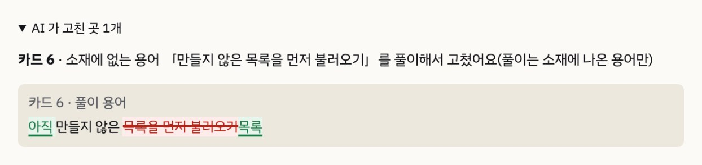

올리기 전에,
30일 뒤 내 계정부터.
AI와 짧게 인터뷰하면 내 개성에서 계정 주제를 찾고, 이름 · 소개글 · 색 · 카드뉴스까지 이어 줍니다. 첫 게시물을 올리기 전에 9칸이 채워진 내 프로필을 먼저 보세요.
macOS · Node.js 24 · Claude 유료 구독이 필요해요. 인스타 로그인은 필요 없어요.
누구나 AI로 잘 만드는 시대. 차이는 결국 나다움에서 납니다.
취업 · 대외활동 · 프리랜서처럼 나를 보여 줘야 하는 순간은 누구에게나 옵니다. 주변에 인스타를 시작해 보라고 하자, 다들 하고는 싶은데 이렇게 말했습니다.
올리기 전에 30일 뒤 내 계정을 먼저 보여 줍니다. 결심은 그 뒤에 해도 됩니다.
질문에 답만 하면 이름 · 색 · 첫 카드뉴스까지 한 길로 이어집니다.
내 답에서 계정 주제 3~5개와, 그 근거가 된 내 말을 찾아 줍니다.
운영자도 같은 곳에서 시작했습니다. AI로 만든 것을 기록하려고 연 계정이 석 달 만에 팔로워 2,840명이 됐고, 그때 직접 부딪히며 정한 것들을 FirstFeed에 담았습니다.
계정 소개 릴스 ↗한 번 찾은 개성이, 마지막 게시물까지 이어집니다.
단계마다 나를 다시 설명하지 않아도 됩니다. 인터뷰로 만든 프로필 하나가 이름부터 카드뉴스까지 모든 생성의 입력이 됩니다.
질문에 답하기
경험 · 관점 · 고집 · 말투처럼 8가지 각도로 한 번에 하나씩 물어요. 글이 어려우면 고르기나 고쳐 쓰기로 답해도 돼요.
나의 개성 정리
계정 주제 3~5개와 근거가 된 내 말을 붙여요. 마음에 안 들면 고치거나 다른 방향 2개를 더 받아요.
계정 꾸미기
글자 수 제한 안에서 아이디 · 소개글을 만들고, 글자가 잘 읽히는 색 조합만 남겨요.
만들고 올리기
고정한 디자인으로 카드뉴스 · 릴스를 만들고, 업로드 순서대로 정리해 폰으로 받아요.
처음 시작하는 데 필요한 것만. 끝까지 한 곳에서.
첫 게시물 전에, 9칸이 찬 내 프로필
시리즈 계획 9개를 실제 프로필 격자처럼 깔아 보여 줍니다. 마음에 들 때 하나씩 만들면 됩니다.
- 실제 인스타 격자와 같게. 최근 게시물이 왼쪽 위, 카드 양옆이 잘리는 정도까지 실제 계정에서 재서 맞췄어요.
- 주제를 번갈아. 같은 주제가 한 줄로 몰리지 않게 코드가 칸을 배치해요.
- 없는 걸 있는 척하지 않게. 아직 안 만든 칸은 「계획」, 없는 팔로워 수는 「–」.
말로 고치고, 전과 후를 보고 적용
「3번 카드 너무 설명조야」라고 말하면 그 카드만 다시 씁니다. 적용하기 전에는 세트가 바뀌지 않고, 언제든 되돌릴 수 있어요. 고친 카드에도 같은 근거 검사가 걸립니다.
설치 끝? 설정부터 열어요.
AI는 고르기만, 코드가 프레임마다 잽니다
AI는 정해 둔 움직임 중에서 고르기만 하고, 코드가 프레임마다 글자가 격자에서 가려지는 영역에 들어가지 않는지 · 글자가 읽히는지 잽니다. 720 · 1080 · 4K로 뽑고 음량도 맞춰요.
8가지 각도로 묻기
같은 각도를 연달아 묻지 않게 코드가 막아요.
개성 캐릭터 프롬프트
고른 값만 영어 프롬프트로 조립해요. 생김새를 AI가 지어내지 않아요.
폰으로 받기
같은 와이파이에서 QR로 카드와 캡션을 받아요. 10분 뒤 저절로 닫혀요.
읽기 전용 · 1회용 주소
내 이름으로 올라갈 글에, 내가 하지 않은 말은 넣지 않습니다.
같은 인터뷰 답을 같은 AI 모델에 검사 없이 넣어 세 번 받아 봤습니다. 게시물 제목 27개를 사람이 하나씩 읽고 판정했어요.
제목에 내가 말한 적 없는 개수(「실수 5가지」, 「기능 3개」)가 붙었고, 한 번은 하지 않은 경험을 계정 주제로 넣었습니다.
내가 말하지 않은 숫자 · 날짜 · 영문 이름이 나오면 코드가 잡아 다시 쓰게 해서, 저장되는 결과에는 남지 않습니다.
AI가 쓰기
정해진 형식(JSON)으로만 받아요.
코드가 검사
근거 없는 숫자 · 이름, 글자 수, 색 대비, 카드 넘침.
AI가 다시 보기
사실 오류만 판정해요. 취향 지적은 경고로만.
다시 쓰기
최대 2번. 통과한 결과만 저장해요.

- 어디를 왜 바꿨는지 사람 말로. 지운 부분은 취소선, 더한 부분은 밑줄로 남겨요.
- 자료에 없는 설명은 표시해요. 「맞는지 확인했어요」를 누르기 전에는 업로드 폴더를 만들 수 없어요.
- 한계도 밝혀요. 한글로 지어낸 경험처럼 코드가 못 잡는 것은 AI 검토와 사람 확인에 맡깁니다.
새 요금도, 새 계정도 없습니다.
FirstFeed는 내 컴퓨터에서 돌고, AI는 이미 쓰고 있는 Claude 구독으로 부릅니다.
답은 내 컴퓨터 안에
인터뷰 답, 프로필, 만든 카드는 내 컴퓨터에 저장돼요. 얼굴이 나오는 원본 영상은 밖으로 보내지 않아요.
구독이 아니면 멈춰요
AI를 부르기 직전마다 구독 로그인인지 확인하고, 아니면 호출하지 않아요. 모르는 요금으로 돌지 않게요.
AI 권한은 최소로
앱이 부르는 AI는 파일 쓰기와 명령 실행이 막혀 있어요. 인스타에 대신 로그인하거나 자동으로 올리지도 않아요.
터미널 다섯 줄이면, 내 컴퓨터에서 열립니다.
- 01macOS지금은 macOS에서만 써 봤어요. Windows는 확인 중이에요.
- 02Node.js 24 이상앱의 로컬 서버를 돌려요.
- 03Claude Code + Claude 유료 구독터미널에서
claude를 실행해 로그인해 두세요.
$ git clone https://github.com/djkdb/FirstFeed.git $ cd FirstFeed && npm install $ npx playwright install chromium # 카드를 그릴 브라우저, 처음 한 번 $ npm run doctor # 설치 점검, 문제마다 다음 할 일 $ npm run dev # → http://localhost:5173
더블클릭으로 여는 설치 파일은 준비 중입니다. 자세한 안내는 README에 있어요.
다음 30일은, 반응을 보고 다시 그립니다.
처음 계정 만들기
- 설문 · AI 인터뷰 · 근거 붙은 프로필
- 이름 · 소개글 · 색 · 글꼴 · 캐릭터 프롬프트
- 템플릿 · 카드뉴스 · 채팅으로 고치기
- 30일 뒤 미리보기 · 오늘 올릴 것
- 릴스 편집 화면 · 모션 제안
실제로 써 보고 반응 넣기
- 지인이 처음부터 끝까지 직접 써 보기
- 게시물 반응을 넣으면 다음 30일 계획을 다시
- 캡션 마무리 · 고정 댓글 · DM 문구
릴스 완성 · 설치 파일
- 대본 → AI 음성 → 자막 → 영상까지
- 내가 찍은 영상으로 릴스 굽기
- 더블클릭으로 여는 설치 파일